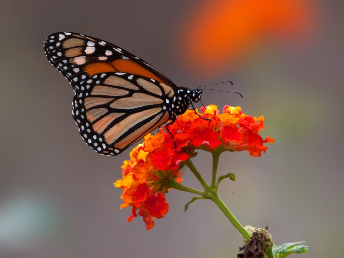

La migración anual de la Mariposa Monarca, desde el norte del continente hasta los bosques de México, es un fenómeno natural único en el mundo. Esta especie, ampliamente distribuida en América, es conocida por emprender un viaje épico hacia los bosques mexicanos, cubriendo una distancia de hasta 5,000 kilómetros.
Con un tamaño que oscila entre 9 y 10 centímetros, las Mariposas Monarca presentan diferencias sutiles entre machos y hembras: los machos son ligeramente más grandes y tienen una mancha negra distintiva en las alas, mientras que las hembras se destacan por sus marcas negras más pronunciadas. A nivel genético, las mariposas monarca cuentan con 16,866 pares de genes, algunos de los cuales les otorgan la capacidad de volar largas distancias con menor fatiga y requerir menos oxígeno, una adaptación crucial para su migración.
Huevos: Después del apareamiento, la hembra deposita sus huevos en la parte inferior de las hojas de la planta asclepia. Cada mariposa puede poner hasta 400 huevos. La incubación dura de 4 a 8 días, tras lo cual emergen las orugas.
Oruga: Al nacer, las orugas se alimentan primero de la cáscara del huevo y luego del algodoncillo. Tras aproximadamente dos semanas, la oruga forma su crisálida, que queda suspendida de la planta.
Crisálda: La fase de crisálida dura entre 8 y 15 días. Durante este tiempo, la oruga pasa por una metamorfosis que la transforma en mariposa. En los últimos días, la crisálida se vuelve transparente, revelando los colores y la estructura de la mariposa.
Mariposa: La mariposa emerge de la crisálida y, dependiendo de la generación a la que pertenece, su vida puede variar de 3 a 6 semanas, o hasta 8 o 9 meses en el caso de la generación migratoria,
Generación 1: Nace en el sur de los Estados Unidos en abril y migra hacia el norte en primavera, poniendo huevos en el centro y este del continente en mayo.
Generación 2: Madura entre mayo y junio, continuando la migración hacia el norte, abarcando el norte de los Estados Unidos y el sur de Canadá.
Generación 3: Nace y muere en su hábitat de verano, en los estados del norte de los Estados Unidos y Canadá, desde las Montañas Rocosas hasta el Atlántico, pasando por los Grandes Lagos.
Generación 4 (I): Conocida como la generación Matusalén, inicia la migración al sur en agosto, recorriendo casi 5,000 kilómetros hasta llegar a los bosques de oyameles de Michoacán entre octubre y noviembre.
Generación 4 (II): Estas mariposas hibernan en los bosques mexicanos, formando racimos en los árboles durante diciembre y enero para resistir el frío.
Generación 4 (III): En febrero, con el aumento de las temperaturas, las mariposas salen del letargo, buscan alimento y agua, y se aparean. Luego inician su viaje de regreso al norte, depositando sus huevos en el sur de los Estados Unido